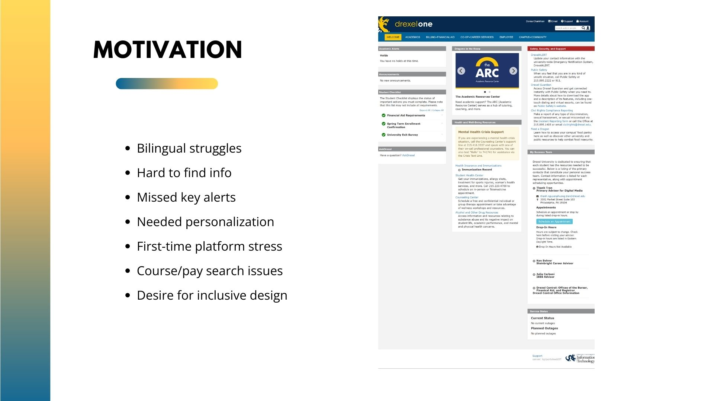
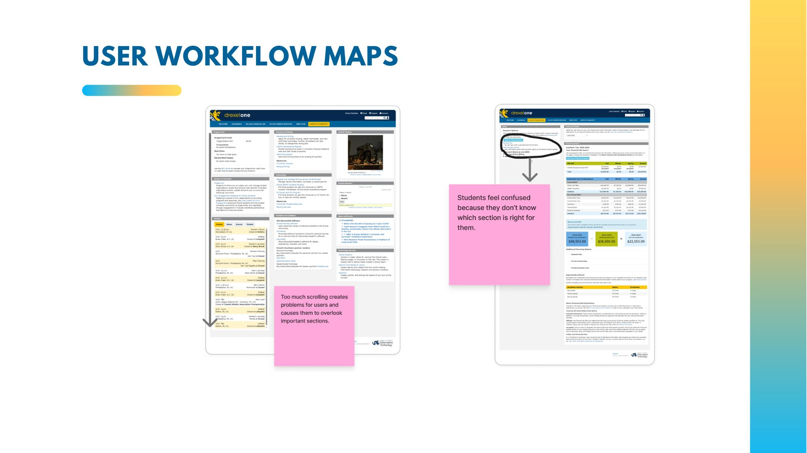

Case study · Master’s thesis
Multilingual AI assistant for inclusive university portals
Why translation alone did not help international students, and what did.
Context
International students at Drexel struggled with DrexelOne, the university portal. They could not find what they needed, abandoned tasks, and blamed themselves, even though the problem was the system. I went in assuming that translating the interface would fix it. The research showed otherwise.

Approach
I combined surveys and IT support logs to see where problems were common, then used semi-structured interviews and think-aloud task testing to understand why. I watched where students paused, where they gave up, and where they said “I don’t understand this.”


Finding
Students rejected “robotic” translation. Word-for-word translation made terms more confusing; they needed concepts explained in language that felt culturally right.
This also surfaced dialect support as a key limit for trust: a translation could be technically correct and still feel foreign.
Design response
Instead of translating everything, we designed D.A.V.E., an AI assistant that explains tasks in context, with tiered language support and adaptive navigation. We also flattened navigation and rewrote labels so the portal became clearer for everyone, not only international students. Testing showed improved task success and less stress for participants.

Prototype
What stayed with me
AI can help people feel less lost, but only if we first understand what is confusing them, in their own words and their own language. That question now shapes my PhD direction.